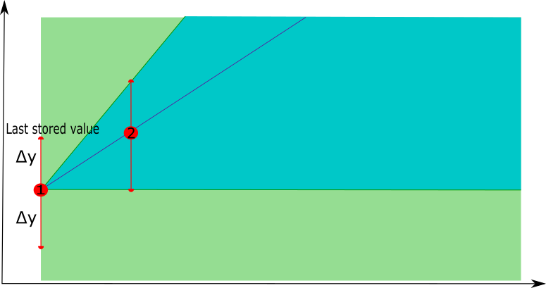
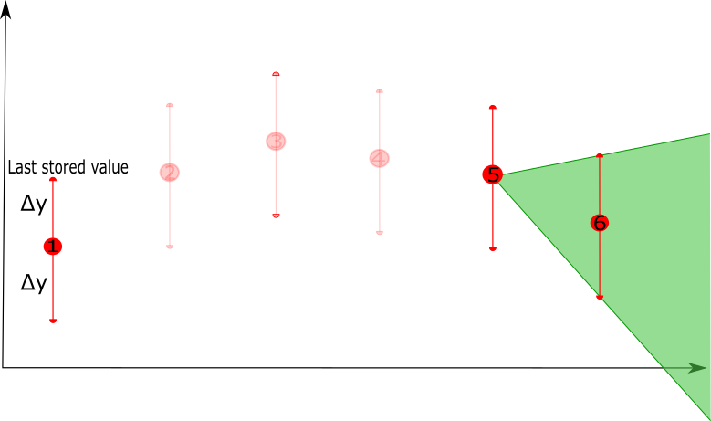

Swinging Door Trending
Category > Intelligent data retention
Sat 02 December 2023Swinging Door Trending¶
In this Starter Kit we take a closer look at one particular state-of-the-art technique for intelligent data retention, called Swinging Door Trending (or SDT). Before applying it on our dataset, we first provide an explanation of how it works conceptually below.
The SDT technique compresses a sequence of data points by using a simplified linear representation. It is computationally simple, so it can run on low-resource devices without significant overhead.
The technique considers an error deviation parameter Δy, which determines the error between the original signal and the compressed signal that one is willing to tolerate. The technique passes through the time series data sequentially, starting with the first two points. The first point is retained, a line is drawn between this point and the second point, and a so-called tolerance band is defined by computing the upper and lower bound, based on the deviation parameter.
An iterative process is started, where the technique considers the next point in the time series and verifies whether that point falls within the tolerance band. If this is the case, the point does not need to be retained and the next data point is considered. This continues until a point is reached that does not fall within the tolerance band, meaning this point cannot be represented by a linear representation between the point last retained and the current point. This last point is then also retained, and a new iterative process starts.
At each step, the tolerance band is also updated. When a next point is considered, its upper and lower bounds are reconsidered. The upper or lower bounds will be updated if the bounds of the next point fall below or above the previous ones, respectively, i.e. if the upper bound of the new point is lower than the previous upper bound, the upper bound is updated, and vice versa for the lower bound. This ensures that the tolerance band will always become smaller when new points are added, since the more points, the less precise the linear representation will become.
The process can be illustrated by means of an example as follows.
- In a first phase, the technique starts with the first point in the time series, the potential tolerance band starts with the whole area after the point. When the second point is considered, a linear interpolation is constructed between these two points and the tolerance band is updated using the deviation parameter Δy.
 |  |
- In a second phase, a next point is selected, the new linear representation is constructed between the last point that was retained and the next point, and the new tolerance band is defined. If the next point, i.e. point 4, has the new lower bound lower than the previous lower bound, the tolerance band is not updated (the purple area will not be used as a tolerance band update), similar for the upper bound.
 |  |
- As long as there are new points that fall in the tolerance band, they can be represented by the linear representation. Once a new point is considered that falls outside the tolerance band, e.g. point 6, the last point of the linear representation, e.g. point 5, will be retained as the compressed version of points 1 to 5. Starting from point 5 a new linear representation will be constructed with point 6 as the first point to consider.
 |  |
In this example, the first 5 points will be compressed by a linear representation that is defined by point 1 and point 5, i.e. removing points 2, 3 and 4.
Authors: EluciDATA Lab
Permanent URL